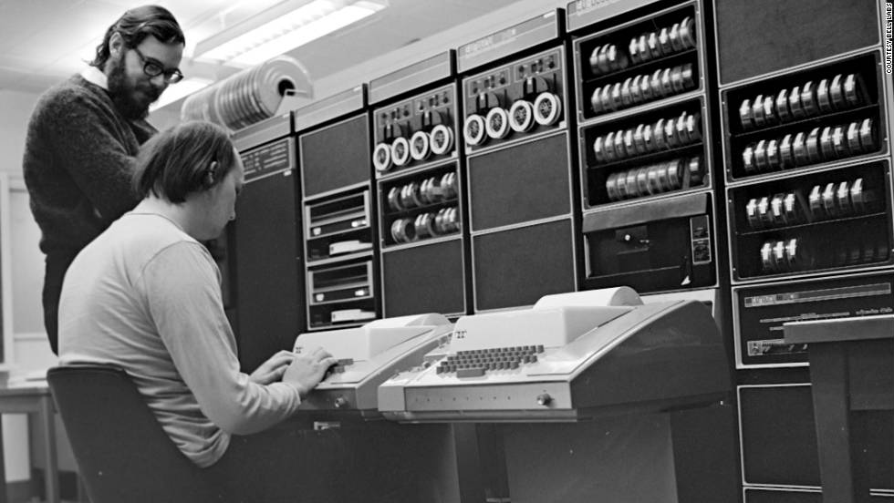
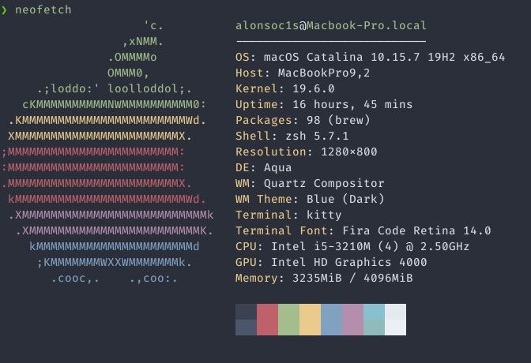

Introducción y motivación
Muchas personas argumentan que las terminales son herramientas de una época pasada. Que todo lo que puede hacer una computadora puede y se debería hacer con una interfaz gráfica bonita, y un mouse. Si bien es cierto que las terminales son herencia de una época distinta, creemos que dan a los usuarios poder, flexibilidad y eficiencia como pocas otras herramientas pueden dar. En una época en la que la tendencia es reducir la interacción con el cómputo a dar clicks a la menor cantidad posible de botones, creemos que aprender a usar tu terminal te dará poderes insospechados. La curva de aprendizaje puede ser pronunciada, pero vale la pena.
A todo esto ¿qué es una terminal?
Una terminal (a.k.a línea de comandos, consola) es una herramienta que da acceso a los servicios de tu sistema operativo a través de una interfaz de texto. Una terminal corre un shell, un programa que interpreta (así como Python o R) comandos que tú des, y lleva a cabo esas instrucciones.
Relevancia
La terminal como herramienta es quizás más relevante para las personas que programan. Si bien es muy posible programar todo el tiempo desde un IDE (Integrated Development Environment), muchas opciones avanzas de desarrollo como compilación con argumentos, debugging y otras solo están disponibles a través de la terminal.
Un poco de historia
El shell que se va a usar en este curso se llama bash. Bash como casi toda la computación moderna nace en Bell Labs (Hoy en día AT&T) en los 70s con el desarrollo de UNIX. UNIX fue uno de los primeros sistemas operativos modernos e influenció a casi todos los que hoy conocemos, entre ellos MacOS y Linux.
La manera de interactuar con UNIX era a través de un teclado, y una máquina de escribir conectada a un mainframe y una impresora que imprimía en papel físico, línea por línea, los comandos que se enviaban a UNIX. Las computadoras ocupaban cuartos enteros y se compartían entre muchos usuarios. El mainframe era el nodo central, y las estaciones con teclados se llamaban terminales, de ahí el nombre.

Como toda la interacción era a través de texto, sin posibilidades de gráficas de ningún tipo, la interfaz de las terminales se diseñó para ser eficiente y para tener comandos cortos y simples. Esa misma motivación es la que hizo de las terminales una herramienta muy eficiente. La terminal era en ese entonces y sigue siendo ahora una herramienta muy poderosa que permite interactuar con casi todo lo que el sistema operativo puede ofrecer. Desde navegación básica y creación de archivos hasta configuración avanzada.
Linux y MacOS son descendientes de la tradición UNIX y preservan muchas de las decisiones de diseño que introdujo.
Notas sobre este curso
Este curso asume que se usa bash, pero para los comandos básicos como los aquí cubiertos es equivalente usar zsh, fish, csh u otra opción. En este curso se asume que estás trabajando en una máquina Linux, MacOS, o bien Windows pero con bash instalado. Bash no está instalado por defecto en windows, pero se puede instalar mediante el paquete de desarrollo de git.
La notación usual para estas notas es usar fuentes monoespaciadas (como
asi) para denotar un comando, el resultado de un comando, o algo que se debe de escribir en la terminal. A veces se usa también para nombres de archivo y carpetas si se está haciendo referencia a la salida de un comando.
Estas notas están basadas en varias fuentes. Entre ellas:
-
[How Linux Works - Brian Ward]
Primeros pasos
¿Cómo abro una de esas terminales?
Para Linux y MacOS:
Abre la carpeta o menú donde usualmente están tus aplicaciones, y busca "terminal". En MacOS al escribir terminal en la barra de Spotlight saldrá la terminal pre instalada. Esa es suficiente por ahora.
En Linux las instrucciones específicas dependen de al distribución,
window manager y desktop environment. Un atajo rápido que funciona en
la mayoría de las distros es la combinación de teclas ctrl + alt + t
Para Windows:
La forma más fácil de obtener bash es descargando git aquí. Después de eso puedes buscar "git bash" en el menú windows y abrirlo.
En todas las plataformas si usas un IDE o un editor de texto como Visual Studio Code es muy probable que ya tenga una terminal integrada. Puedes abrir esa.
Una vez instalado
Al abrir la terminal aparecerá una pantalla con texto, y probablemente una línea de texto con lo siguiente:
user@host:~$
Esta línea se suele llamar prompt y quiere decir un par de cosas. La
línea empieza con la palabra user en este caso. En tu caso mostrará
tu nombre de usuario en la computadora. La siguiente palabra, en este
caso host es el nombre de la computadora en
la que se está trabajando. Separado por : está un tilde (~).
Después de los dos puntos encontramos el nombre de la carpeta actual.
La tilde es una abreviación para la carpeta "home" en tu sistema.
Finalmente, hay un signo $. El cursor siempre aparece después de él,
e indica que se pueden empezar a escribir comandos.
A partir de ahora adoptamos la convención de omitir el hostname y
directorio actual (current working directory). Las líneas de código
que comiencen con $ deben ser interpretadas como una nueva línea en
la terminal. Por ejemplo, puedes correr este primer comando:
$ echo "Hola Mundo"
Hola mundo
Navegación
En la sección pasada mencionamos que bash siempre muestra el directorio actual en la línea de comandos, y lo llamamos current working directory. Es importante tener en mente que la terminal siempre tiene este concepto de directorio actual presente. Es como abrir una ventana del explorador, siempre está abierta en una carpeta, y los cambios que se hagan van a suceder en esa carpeta. Con la terminal es similar, los comandos que se den tendrán efecto sobre los archivos y carpetas en el directorio actual. Además de verlo en la línea de comandos que da bash puedes usar un comando para obtener el path1 completo.
$ pwd
/Users/alonsoc1s/Documents/itam4code/Cursos/shell/src
Los paths que comienzan con / se llaman absolutos porque dan una
dirección desde la raíz del sistema de archivos. El directorio (o
carpeta) / es especial, pues es el directorio que contiene a todos
los otros. Otro directorio especial es ~ (tilde), que es el
directorio "home" del usuario actual. Por ejemplo, para mi es
/Users/alonsoc1s. Los paths que no empiezan con / se llaman
relativos, y se interpretan como la dirección a algo a partir de el
directorio actual.
Otras abreviaturas importantes son el directorio . que se refiere al
directorio actual, y .. que se refiere a el directorio padre. Por
ejemplo, puedes navegar una carpeta arriba con cd ... Más tarde lo
veremos con más detalle.
La palabra path se refiere a la dirección completa de un archivo o carpeta en tu sistema de archivos. Ayuda pensar que es como el camino que se debería seguir al navegar por el sistema de archivos para llegar hasta un lugar
Dadas las limitaciones de una interfaz de texto hay algunas cosas que nos gustaría saber hacer. Por ejemplo listar los contenidos de la carpeta actual, eliminar archivos, renombrarlos, moverlos, y movernos entre carpetas, entre otras cosas.
Trabajando con carpetas y archivos
Para listar los contenidos del directorio actual se usa el comando
ls. Mnemónico útil: list
$ ls
book
book.toml
figs
src
En este ejemplo en mi directorio actual tengo algunas carpetas y
algunos archivos. Puedes notar cual es cual porque los archivos suelen
tener extensiones (como .toml en el caso de book). En algunas
terminales y en shells más modernos ls colorea el listado para hacer
notar si son carpetas, archivos de texto, ejecutables, etc... Si todo
falla puedes usar el comando file para obtener más información.
$ file src # Usando file con una carpeta
src: directory
$ file book.toml # Usando file con un archivo
book.toml: UTF-8 Unicode text
Un comando no-estándar muy útil para ver la estructura de árbol del
sistema de archivos es el adecuadamente llamado tree.
$ tree
.
|-- book
| |-- 404.html
| |-- files.html
| |-- fonts
| | `-- source-code-pro-v11-all-charsets-500.woff2
| `-- utils.html
|-- book.toml
`-- src
|-- SUMMARY.md
|-- figs
| `-- dennis_y_ken.png
`-- utils.md
9 directories, 74 files
Para navegar en el sistema de archivos o en otras palabras, cambiar de
directorio, está el comando cd que es abreviatura de change
directory. cd te permite moverte dando paths relativos o
absolutos. Dando un path relativo la navegación es como navegar con el
mouse, vas a subcarpetas del directorio actual o subes una carpeta.
Navegar con paths absolutos nos permite dar brincos entre cualesquiera
dos lugares del sistema de archivos. Tomando el ejemplo anterior,
podemos navegar a la carpeta src, o navegar a otra parte
completamente diferente.
$ cd src # Entrando a la carpeta src del directorio actual
$ cd ~/Documents/otroproyecto # Brincando a un lugar completamente distinto
Los comandos como ls también pueden tomar "flags" o modificadores.
Por ejemplo, ls tiene flags para ver a quién le pertenecen los
contenidos de un directorio y cuando se modificaron por última vez.
El modificador -lda los detalles de propietario y fecha de
modificación tamaño en bytes, entre otros, mientras que -a es corto
para --all y hace que ls muestre incluso los archivos ocultos2.
$ ls -l -a
total 32
drwxr-xr-x 8 alonsoc1s staff 256 Mar 9 14:08 .
drwxr-xr-x 9 alonsoc1s staff 288 Mar 8 23:09 ..
-rw-r--r--@ 1 alonsoc1s staff 6148 Mar 9 08:36 .DS_Store
-rw-r--r-- 1 alonsoc1s staff 5 Mar 8 21:13 .gitignore
drwxr-xr-x 33 alonsoc1s staff 1056 Mar 9 14:37 book
-rw-r--r-- 1 alonsoc1s staff 124 Mar 8 21:13 book.toml
drwxr-xr-x 4 alonsoc1s staff 128 Mar 8 23:03 figs
drwxr-xr-x 15 alonsoc1s staff 480 Mar 8 21:33 src
En los sistemas estilo UNIX es común tener archivos ocultos.
Estos archivos suelen guardar configuraciones o carpetas protegidas
o restringidas. Por ejemplo el archivo .gitignore presente en esta
carpeta configura los tipos de archivos que queremos que git ignore.
Por ahora no importan los detalles del output del comando anterior,
solo la sintaxis para dar modificadores a un comando. La sintaxis
estándar es - y una letra, o bien -- y el nombre largo del
modificador. Bash valora mucho la eficiencia, entonces los nombres de
los comandos son lo más cortos posibles, como una letra. El ejemplo
anterior se puede hacer aún más corto! Cuando se tienen varios
argumentos de una sola letra se pueden combinar bajo el mismo - para
formar algo como:
$ ls -la
En ocasiones se puede poner tan ridículo complejo como
$ curl -fsSL
Creando carpetas
Para crear un directorio podemos usar el comando mkdir. Es fácil
recordar el nombre porque casi se lee "makedir". Vale la pena hacer
notar que mkdir es más poderoso y versátil que dar click derecho en
el explorador de archivos y dar click a la opción "nueva carpeta".
Tareas que tomarían repetir la misma operación varias veces, como
crear carpetas anidadas, muchas carpetas a la vez, o crear carpetas
por lote, se pueden hacer en una solo línea.
Primero un ejemplo de crear una carpeta vacía en el directorio actual.
$ mkdir nueva_carpeta
Usando el modificador -p (corto para parent) podemos anidar carpetas
a la profundidad que queramos. No importa si las carpetas contenedoras
(padre) existen o no!
$ mkdir nueva_carpeta/carpeta_hija # No necesitamos -p porque ya existe carpeta padre
$ mkdir -p otra_nueva/hija_1/hija_2 # Necesitamos -p porque no existía la carpeta padre otra_nueva
También podemos crear muchas carpetas en un solo comando, estén o no a la misma profundidad.
$ mkdir carp_1 carp_2 carp_3
Una manera de crear archivos
Bash da muchas opciones para crear nuevos archivos e incluso nos deja
ponernos muy creativos. Una de las opciones más fáciles es usando el
comando touch con el nombre del archivo nuevo.
$ touch nuevo_archivo.txt
El archivo nuevo.txt estará vacío y se creará con la extensión
específica. Técnicamente touch hace más que crear archivos, pero es
muy útil para crearlos rápidamente.
Una manera más divertida de crear archivos es crearlos
redireccionando el resultado de otros comandos y guardarlo en un
archivo nuevo. Por ejemplo, usando ls podemos guardar en un archivo
nuevo llamado carpetas.txt todas las carpetas presentes en el
directorio actual.
$ ls > carpetas.txt
El operador > redirige el output que resulta de correr ls.
Usualmente ls y la mayoría de comandos imprimen en la terminal sus
resultados. Ese texto es tomado por > y enviado como contenido a un
archivo. Por ejemplo, otra manera de crear un archivo con texto
predeterminado se puede hacer con echo.
$ echo "# Esto es un readme" > README.md
Como mencionamos antes echo hace lo que el nombre sugiere: toma
texto y lo imprime tal cual en la terminal. En el ejemplo anterior
está tomando el texto "# Esto es un readme" y lo está escribiendo tal
cual en archivo README.md. Si no existía lo crea, pero si ya existía
borra los contenidos anteriores y los reemplaza. Si no es eso lo que
queremos y preferimos añadir al contenido anterior podemos usar el
operador >>, que funciona exactamente igual pero evita perder la
información que ya estaba en el archivo.
Ejemplo de uso común
El comando cat sigue bien la tradición de nombres cortos y auto
descriptivos. En este caso es corto para "concatenate", y hace justo
eso. Recibe como argumentos nombres de archivos, y pega los contenidos
de éstos uno detrás de otro. Esto es muy útil en muchas situaciones.
Por ejemplo, si se tienen dos o más archivos, ¿cómo juntar sus contenidos en un archivo nuevo? Usando un mouse la solución obvia sería abrir cada archivo uno por uno, copiar sus contenidos y pegarlos en algún otro lugar. Usando la terminal esto se puede hacer escribiendo una sola línea de texto:
$ cat autores.txt contenido.txt >> doc.txt
Podría parecer que este es un ejemplo de juguete, y hasta cierto punto
lo es. Pero es una situación que surge comúnmente en la práctica y se
puede hacer aún más poderoso. Por ejemplo, ¿qué tal si hay demasiados
archivos como para listarlos uno por uno? Por ejemplo, digamos que hay
muchos archivos de texto que guardan notas de clase y están numerados
por clase y necesitas todo en un solo archivo. Pensando que los
archivos se llaman clase_1.txt, clase_2.txt, ... y así
sucesivamente, podemos usar el siguiente comando.
$ cat clase_*.txt >> clases.txt
El * permite seleccionar todos los números al final del nombre de
los archivos. Hay otra variedad de patrones que permiten seleccionar
archivos dependiendo de patrones, pero lo veremos más tarde. El
concepto de redirección también lo revisaremos más tarde. ¿Ya se
empieza a ver el poder de la terminal?
Entonces ¿se supone que me sepa todos los modificadores posibles?
Usualmente solo se usan un par de argumentos para algún comando,
dependiendo de qué uso común le demos. Pero no es necesario saberlos
todos. Casi todos los comandos de bash e incluso los que se puedan
instalar aparte por el usuario tienen un argumento especial: -h,
corto para --help. Por ejemplo, podemos ver los posibles argumentos
de cat así.
$ cat --help
Usage: cat [OPTION]... [FILE]...
Concatenate FILE(s) to standard output.
With no FILE, or when FILE is -, read standard input.
-A, --show-all equivalent to -vET
-b, --number-nonblank number nonempty output lines, overrides -n
-e equivalent to -vE
-E, --show-ends display $ at end of each line
-n, --number number all output lines
-s, --squeeze-blank suppress repeated empty output lines
-t equivalent to -vT
-T, --show-tabs display TAB characters as ^I
-u (ignored)
-v, --show-nonprinting use ^ and M- notation, except for LFD and TAB
--help display this help and exit
--version output version information and exit
Examples:
cat f - g Output f's contents, then standard input, then g's contents.
cat Copy standard input to standard output.
GNU coreutils online help: <http://www.gnu.org/software/coreutils/>
Full documentation at: <http://www.gnu.org/software/coreutils/cat>
or available locally via: info '(coreutils) cat invocation'
Si todo falla, el comando man, de "manual", te muestra un manual
completo para el uso del comando. Usualmente contiene una sinopsis y
todos los posibles modificadores.
Archivos
Ahora revisamos algunas de las tareas básicas del día a día con respecto a archivos. Por ejemplo, mover, renombrar, copiar y borrar. Continuamos con el ejemplo de la sección anterior con una carpeta que se ve así:
$ ls
book
book.toml
src
Moviendo archivos
Por ejemplo, si decidimos que el archivo book.toml debería estar en
la carpeta book, podemos usar el comando mv (move).
$ mv book.toml book
Una vez más, el usar una terminal nos permite ahorrarnos algunos pasos
extra que tendríamos que dar trabajando con el explorador gráfico de
archivos. Por ejemplo, si hay un archivo importante.txt dentro de la
carpeta book y queremos moverlo a la carpeta actual, un primer
instinto sería movernos dentro de book con cd, y mover el archivo
hacia arriba con mv importante.txt .. (recordar que .. hace
referencia al directorio padre). Pero hay un camino más fácil. Como
podemos referirnos a objetos en el sistema de archivos con paths
relativos y absolutos podemos mover y copiar cosas por todo el árbol
de archivos sin tener que cambiar de carpeta una sola vez. Para este
ejemplo específico podemos usar el comando que está abajo. Nótese que
. hace referencia a la carpeta actual.
$ mv book/importante.txt .
En este caso mv toma dos argumentos: El primero es el nombre del
archivo que se va a mover, y el segundo es a dónde será movido. Es
decir, primero recibe un nombre de archivo, y luego un nombre de
directorio. Es importante notar que no solo el orden es importante,
sino que darle argumentos diferentes a el mismo comando resulta en
comportamientos diferentes. El caso particular de mv lo revisaremos
ahora mismo.
Renombrando archivos
Cuando se utiliza mv con dos argumentos, ambos nombres de archivos,
mv cambia el nombre del archivo en el primer argumento. En un
ejemplo concreto, tomemos el archivos book.toml y cambiemos el
nombre a libro.toml.
$ mv book.toml libro.toml
$ ls # Usamos ls para verificar que funcionó. No es necesario
book
libro.toml
src
Copiando archivos
Copiar archivos es muy simple. El comando para hacerlo se llama cp
(por copy). Su sintaxis es muy similar a la de mv, toma por
primer argumento el nombre del archivo que se va a copiar, y el
segundo argumento es el nombre del archivo copia. Por ejemplo, si
queremos hacer un backup de book.toml lo podemos hacer con el
siguiente comando.
$ cp book.toml book_backup.toml
Como ya es costumbre, podemos usar paths relativos o absolutos para copiar cualesquiera dos archivos en el sistema de archivos, sin importar qué tan lejos estén. Por ejemplo, para la creación de estas notas usé una foto que ya tenía guardada en mis archivos en otro carpeta lejana.
$ cp ~/Documents/projects/meme_git.png meme_git.png
Nótese que el segundo argumento es un nombre de archivo simple, o eso
parece a primera vista. En realidad se puede pensar como un path
relativo! Es un path que apunta directamente al current working
directory. Entonces el comando anterior copia un archivo
meme_git.png localizado en ~/Documents/projects/ a el directorio
actual con el nombre meme_git.png.
Borrando carpetas y archivos
ADVERTENCIA: A diferencia de usar un explorador de archivos gráfico, borrar un archivo o carpeta no envía archivos a una papelera u otro espacio intermedio. Lo que se borra con estos comandos NO HAY MANERA DE RECUPERAR.
Borrar archivos es tan fácil como moverlos o renombrarlos, hay un
comando de nombre fácil de recordar. Ese comando se llama rm por
remove. A diferencia de por ejemplo mv, rm solo necesita
un argumento: el nombre del archivo a borrar. Sin embargo puede tomar
muchos argumentos y todos ellos serán borrados. Por ejemplo, si
queremos borrar el archivo book.toml el siguiente comando lo hace.
$ rm book.toml
Realmente no hay mucho más qué decir respecto a borrar archivos, pero borrar carpetas requiere un poco más de discusión. Si intentamos borrar una capeta no-vacía con la misma estrategia con la que borramos un archivo obtendremos un error.
$ rm book
rm: book: is a directory
Dado que no hay un undo para rm, el comando tiene un poco de
seguridad integrada. Detecta que la carpeta book no está vacía, y
avisa para que no borres una cantidad enorme de archivos por error. Si
efectivamente querías borrar toda la carpeta y sus contenidos hay un
modificador que permite hacer eso: -r por --recursive. Por
ejemplo.
$ rm -r book
Otro comando para eliminar carpetas es rmdir.
En foros para principiantes de Linux hay un comando "de broma" muy común:
sudo rm -rf /*. Nunca nunca es buena idea correr este comando.sudoes un comando que da permisos de administrador para correr un comando. Puntos extra si logras ver porqué es mala idea correr este comando.
Otros comandos útiles
El contenido de los últimos capítulos puede parecer restrictivo y es porque si lo es. Esos son apenas los fundamentos para hacer cosas que ya sabías hacer en tu explorador de archivos. Pero la terminal tiene mucho más qué ofrecer, y algunas de estas herramientas te pueden ser muy útiles a la hora de resolver los problemas con los que se suele encontrar una persona que desarrolla software. Esto es apenas un teaser, no se cubre ningún comando con particular atención.
Grep
Con el comando grep podemos encontrar texto dentro de archivos u
otros medios de input a la terminal. Lo interesante es que grep no
solo encuentra texto tal cual, sino que está equipado para encontrar
patrones usando un subconjunto de algo llamado "expresiones
regulares" que amerita sus propias notas. Basta saber que * sirve
para encontrar "cualquier cadena de caracteres", de la misma manera en
la que usamos * antes para seleccionar todos los archivos dentro de
una carpeta. Veremos esto más a detalle.
Por ejemplo, digamos que busco las líneas que contengan la palabra "terminal" en estas notas.
$ grep terminal *
files.md:Una vez más, el usar una terminal nos permite ahorrarnos algunos pasos
first_steps.md:## ¿Cómo abro una de esas terminales?
first_steps.md:busca "terminal". En MacOS al escribir terminal en la barra de
historia.md:las estaciones con teclados se llamaban _terminales_
intro.md:Muchas personas argumentan que las _terminales_ son
meta.md:algo que se debe de escribir en la terminal. A veces se usa también
nav.md:working directory. Es importante tener en mente que la terminal
Grep muestra el nombre del archivo donde encontró una coincidencia, seguido de la línea donde está.
Less
A veces nos interesa dar un vistazo rápido a un archivo, y localizarlo
en la terminal para después abrirlo en el explorador de archivos es
muy ineficiente. Para eso existe el comando less. El comando actúa
como un paginador, algo que parte el archivo en la cantidad de líneas
que caben en tu ventana actual. Para avanzar una "página" puedes usar
la barra de espacio, para ir atrás una puedes usar la tecla b. Para
salir presiona q.
El comando man mencionado en la sección sobre navegación utiliza un
paginador muy similar, también puedes salir de ahí presionando q. El
nombre lesspuede parecer contraintuitivo. Se debe a que es sucesor
de otro paginador llamado more por el texto --MORE-- que aparece
en la parte de abajo de la pantalla cuando lo usas.
Head & Tail
A veces usar less es más de lo necesario. Si necesitas información
de las primeras líneas en un archivo, puedes usar head, y si
necesitas información de las últimas, puedes usar tail. Los nombres
de los comandos son auto-descriptivos. Cabe mencionar que se puede
ajustar el número de líneas que muestran head y tail. ¿Cuál es la
sintaxis para eso? Buen momento para poner en práctica man!
Diff
En muchas ocasiones es útil comparar dos archivos. Por ejemplo,
archivos .csv con muchas filas de datos. Diff permite comparar
archivos línea por línea y solo muestra las líneas que no coinciden.
Si los archivos coinciden en todos lados no muestra nada. Se usa así:
diff archivo_a.csv archivo_b.csv
Find
Otra cosa que podrías extrañar de tu explorador de archivos es la
barra de búsqueda. También se pueden buscar archivos en la misma
terminal. Por ejemplo, si sabes con seguridad que buscas un archivo
específico en alguna parte del árbol de archivos puedes buscarlo sin
importar a qué profundidad esté. Por ejemplo, puedo buscar el archivo
meme_git.png de un ejemplo anterior dentro de mis Documentos.
$ find ~/Documents/ -name meme_git.png
Esta forma de buscar también da el poder de buscar archivos por sus
contenidos, o dando un patrón de búsqueda para el nombre de archivo
al estilo de grep, pero eso es algo avanzado para este curso.
Uniq
El comando uniq por default muestra las líneas únicas "no repetidas"
en un archivo de texto. Suele ser muy común pegar dos veces al copiar
una línea, entonces una manera rápida de verificar es usando uniq.
El comando también se puede configurar para solo mostrar las
repetidas, lo cual es útil en archivos de texto como escritos o
scripts, mientras que la configuración estándar es útil por ejemplo
para detectar observaciones repetidas en un archivo de formato .csv.
$ uniq README.md # Encuentra líneas únicas en el archivo.
Un poco de plomería
Ya vimos algunos ejemplos de cómo la terminal de mucho poder al usuario que sabe usarla, su auténtico poder se libera haciendo uso de las características que precisamente la hacen diferente a trabajar con un navegador de archivos, por ejemplo. Es bueno recordar que un shell es un intérprete de comandos en toda la extensión de la palabra.
Inputs, outputs, errores
Hasta ahora hemos usado los términos input y output sin mucho cuidado. Ahora habrá que clarificar su uso, porque son conceptos muy importantes. El que el shell tenga concepto de esto le permite hacer mucho más que crear y mover archivos ociosamente. No hay que olvidar que en tiempos de UNIX ésta era la única manera de interactuar con una computadora, y muchas personas hacían tareas complejas como procesar texto, todo sin siquiera acercase a algo como word.
Como mencionamos antes, los comandos tienen un output determinado. Este se suele mostrar en la terminal justo después de que se corrió el comando, como lo hemos estado mostrando en estas notas. Los comandos de bash están diseñados para usar dos canales de comunicación con el usuario: standard out (stdout) y standard error (stderr). Cuando creamos un archivo con el comando,
$ ls > contenidos.txt
redirigimos des stdout hacia otro lugar, en donde bash lo tomó y lo
mandó como contenido al archivo contenidos.txt. Ese lugar se llama
standard in (stdin). Entonces, ahora tenemos un canal para enviar
información a comandos, y dos en los cuales la recibimos. Esta
redirección es mucho más versátil que solo escribir archivos nuevos.
El pipe
El operador > nos permitió redirigir stdout a un archivo. Lo
interesante es que se puede redirigir de stdout directo a stdin para
que otros comandos los puedan leer. Por ejemplo, less tomaba como
argumento un nombre de archivo, pero en realidad no es necesario
dárselo! Si se corre less sin argumentos, tratará de leer de stdin.
En un ejemplo concreto, podemos usar el ejemplo de grep otra vez y
ahora buscar una palabra muy común. Por ejemplo:
$ grep el *
Ese comando buscará las líneas donde aparezca la palabra "el" en los
archivos que componen éstas notas. Es de esperarse que haya muchos
resultados, por lo que grep llenará la pantalla sin problemas. Si se
quiere hacer una análisis minucioso de las apariciones, scrollear
arriba y abajo en la ventana de la terminal no es lo más cómodo.
Intentemos escribirlo a un archivos!
$ grep el * > resultados.txt
Ahora podemos usar less para abrir el archivo con más comodidad.
$ less resultados.txt
Pero, ¿no se siente arcaico crear un archivo intermedio para después
tener que borrarlo? Lo es. Podemos evitar este paso dándolo a less
lo que queremos que nos muestre directamente.
$ grep el * | less
El caracter | se llama pipe en inglés. En términos simples, toma
el stdout del lado izquierdo y lo manda a stdin para el comando del
lado derecho. Esto se llama "piping" en inglés y me referiré a ello
como "pipear" a falta de una mejor traducción.
En el ejemplo anterior estamos tomando stdout de grep, el listado de
coincidencias como en el ejemplo de la sección anterior, y en vez de
mostrarlo todo al mismo tiempo en la terminal, lo envía como input a
less, que como recordamos, toma ese texto y lo divide en páginas
para facilitar su lectura.
No hay límite para cuantos comandos se pueden encadenar uno tras otro, y el uso creativo de estos bloques básicos de construcción da para resultados realmente increíbles. Al principio de las notas se comentó que la filosofía de diseño UNIX era crear muchos programas pequeños diseñados para hacer una y solo una cosa muy bien. Ahora debería hacer más sentido esa decisión de diseño. No se necesitan programas complicados cuando se tiene los ladrillos y el cemento, y mucha creatividad.
Los ejemplos más bellos de éste concepto en acción los da el mismísimo Brian Kernighan en esta joya histórica, un documental de UNIX con la aparición de los iconos Kernighan y Ritchie.
La terminal es muy poderosa
El contenido de este capítulo es principalmente ejemplos de cosas muy poderosas que se pueden lograr con la terminal. La mayoría construye sobre comandos que ya se han mencionado en las notas. Dicho eso, no siempre intentan ser claros, es un poco de motivación para perderle miedo a la terminal.
¿Ya mero acabamos?
Entre muchas comunidades de personas que programan es común usar las
palabras FIXME y TODO (To Do) dentro de los comentarios de programas
para marcar cosas que quedan pendientes, posibles errores o cosas por
implementar. También es muy común que proyectos no-triviales estén
distribuidos a través de muchas carpetas y muchos archivos. En un solo
archivo se podría "usar ctrl + f para buscar apariciones de estas
palabras, pero hacerlo archivo por archivo es menos que deseable. El
problem se puede resolver así:
$ grep '# TODO\|# FIXME' */* | wc -l
24
El resultado es un número, el número de apariciones distintas de
líneas que contengan el string "TODO" O "FIXME". El comando wc
cuenta palabras (word count), y cuando se le da el modificador
-l cuenta líneas en vez de palabras.
¿Qué tanto escribí?
Usando a nuestro nuevo amigo wc podemos contar las palabras usadas
en un archivo de texto. Una vez más, es común tener proyectos
distribuidos en muchas carpetas, en muchos archivos, y correr wc uno
por uno no es divertido. Se puede hacer esto mejor:
$ wc *
wc: figs: read: Is a directory
138 817 4942 files.md
55 319 1917 first_steps.md
29 240 1451 historia.md
28 222 1365 intro.md
24 156 1004 meta.md
302 1832 11584 nav.md
1 3 19 next_steps.md
99 691 4183 plumbing.md
1 2 12 scripting.md
28 195 1174 showoff.md
104 736 4538 utils.md
830 5274 32787 total
wc sin argumentos muestra de izquierda a derecha, el número de
líneas, el número de palabras y el número de bytes.
Terminal User Interfaces
Hay una buena cantidad de personas que le tienen tanto cariño a su
terminal que han encontrado maneras de representar solo con texto
elementos gráficos con tal de monitorear su trabajo sin dejar la
terminal. Dos ejemplos notables son htop, y btm.
htop es una utilidad que muestra una gráfica de uso de los núcleos
de procesador y una lista de los procesos que están consumiendo más
memoria o poder de procesamiento. Se ve asi:

Por su parte, btm es un sucesor espiritual de htop y trata de
hacer lo mismo con más información y una interfaz "más moderna".

Ambos htop y btm tienen propósitos prácticos. Hay otros comandos
menos útiles, como neofetch:

O bien, cowsay, que es poco útil pero tierno:
$ cowsay "Espero que te hayan sido útiles estas notas"
________________________________________
/ Expero que te hayan sido útiles estas \
\ notas /
----------------------------------------
\ ^__^
\ (oo)\_______
(__)\ )\/\
||----w |
|| ||